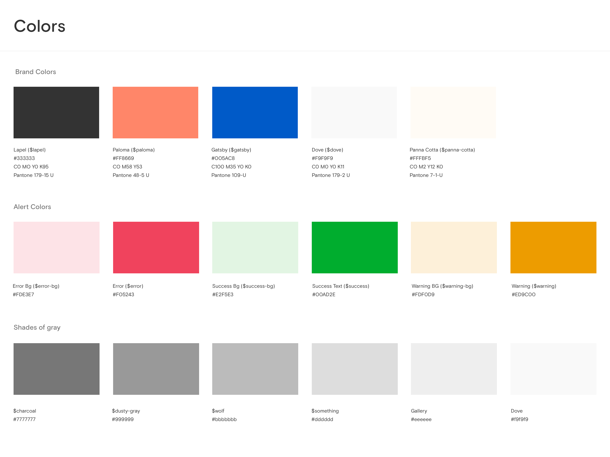
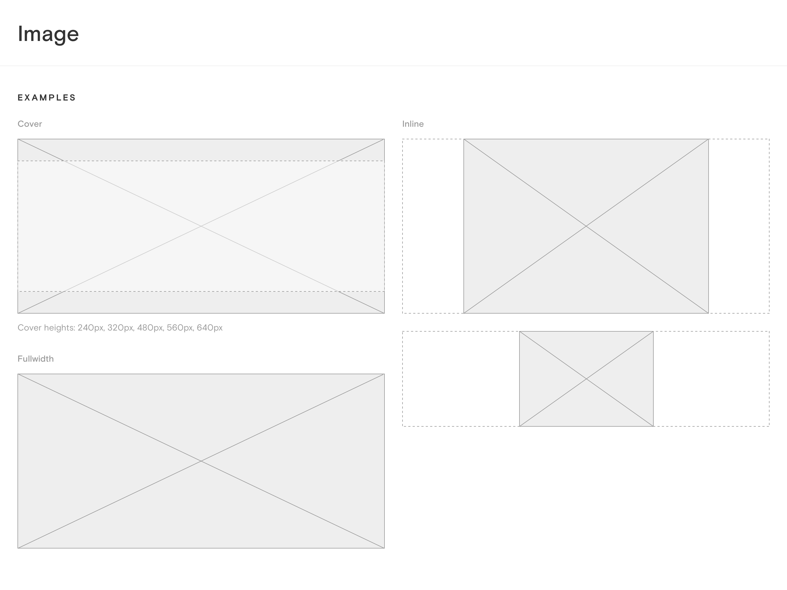

Challenge
About six months into my tenure at Paperless Post, we developed a new brand identity system. As part of this effort, I led a small team tasked with translating this identity into a new product style guide and pattern library. The goal of the project was to create a consistent product interface to increase speed to market and create a more consistent user experience.
Approach
This is the approach we took over the course of the project to define an initial set of rules and components.
Process
- Conducted an audit of existing patterns and styles
- Created a minimal list of required elements
- Worked with the creative directors to develop a design scale and system
- Designed new components according to that system, stress testing our rules against various use cases.
- Created a sketch style guide for use within the PD team
- Worked closely with the developers to implement the new system.
Guiding principles
In the past, the design team had not had a consistent style. When conducting a CSS audit, we found font-style declarations of 13, 14, 15, 16, 17, 18, 19, 20, 21, etc. You get the idea.
In order to prevent this sort of chaos, we created the following principles:
- Use the fewest number of unique styles needed to achieve visual hierarchy.
- Label font styles according to usage not size/typeface/color.
- Use a typographic scale.
- Use a baseline grid for vertical rhythm.
Results
After working with the brand team on the styles, I set out to create a sketch file used to communicate with the design team. I also created a pattern library with the front-end team to document the code.
Grids and spacing
We chose 16 as the base unit of the Paperless Post grid. All specified units of height, width, padding, margin and font size related to this scale. With small elements, if increments of 16 did not provide the proper finesse for sufficient visual hierarchy, we broke to the 4px or 8px scale.
Rhythm
Paperless Post's available type sizes are based on a custom, interval-based scale.
| 10 | 12 | 16 | 20 | 24 | 32 | 40 | 48 | 64 |
| .625em | .75em | 1em | 1.25em | 1.5em | 2em | 2.25em | 3em | 4em |
| +2px | +4px | +8px | +16px | |||||
Sketch UI kit


Conclusion
A style guide is a never-ending project, but we've seen a marked improvement in our UI since we undertook this effort. Communication between front-end and design has been more open and fluid, and designers are more concerned with following the guide that personal expression.